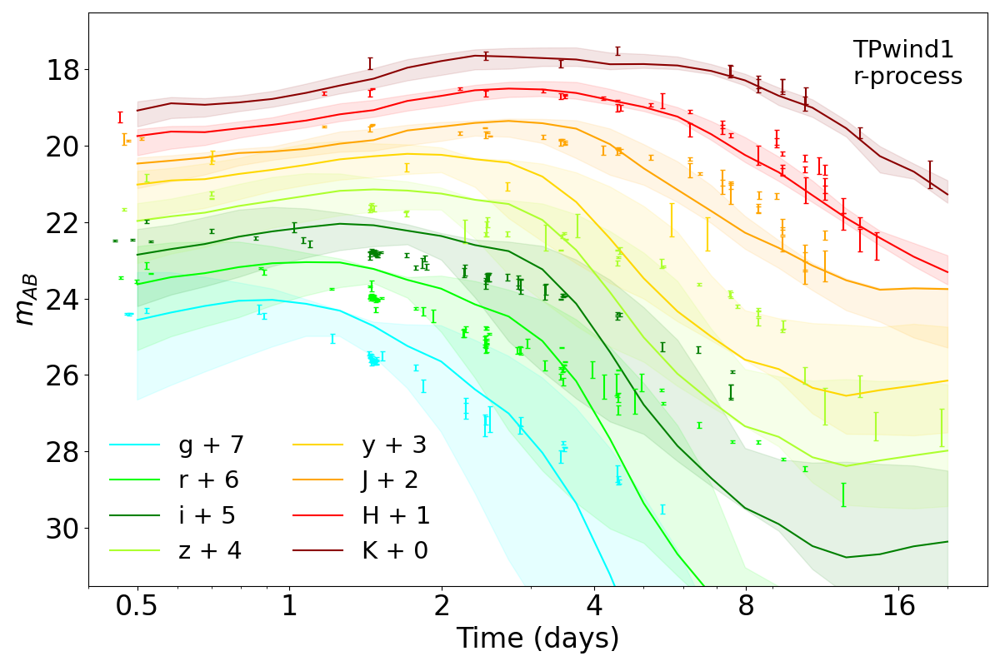
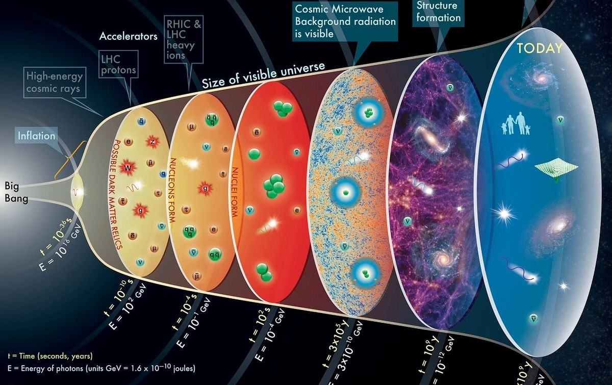

Kilonova

Surrogate kilonova models and parameter estimation
Kilonova emission generated using SuperNu, interpolated using Gaussian Process and used to infer the GW170817/AT2017gfo ejecta parameters [1].
Prof. Richard O'Shaughnessy, Marko Ristic, Rochester Institute of Technology, Dr. Ryan Wollaeger et al. CTA, LANL
Binary neutron star mergers with Numerical Relativity

Binary neutron star merger simulations
Phase transitions in Equations of state and their corresponding gravitational wave signatures from neutron star merger. Einstein Toolkit used for simulation of the coalescence [2].
Prof. Grant Mathews, University of Notre Dame, Dr. Hee Il Kim, Dr. In-Saeng Suh
Big Bang nucleosynthesis

Nuclear distribution in Big bang nucleosynthesis
Statistical mechanics approach to relativistic electron-nuclei scattering in the Big bang nucleosynthesis plasma [3], [4], [5], [6].
Prof. Grant Mathews, University of Notre Dame, Dr. Nishanth Sasankan, Dr. Motohiko Kusakabe
Large Scale structure of Cosmology

Large scale structure
Scale of Homogeneity of the Cosmos with Quasars as tracers [7].
Prof. Subhabrata Majumdar, and Dr. Prakash Sarkar
Tata Institute of Fundamental Research, Mumbai, India